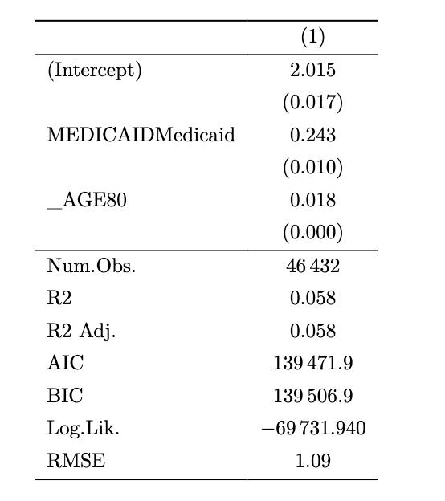

library(tidyverse)
library(dplyr)
library(haven)
library(broom)
library(fixest)
library(modelsummary)Data Lab 7 - Regression Basics: Controlling for Counfounders Pt.2
In this Data Lab, we’re going to extend our exploration of the relationship between Medicaid coverage an self-reported health by incorporating multiple confounders into our regression model.
In Data lab 6, we estimated a univariate regression model that allowed us to examine the effect of Medicaid on health controlling for age. We called that a univariate regression model because we only had one control variable: age.
Today, we’ll increase the complexity of our regression model by adding additional controls and estimating a multivariate specification.
Step 1: Create a New R Markdown Document for this Data Lab
Create a new R Markdown document and give it a YAML header that includes the title “HPAM 7660 Data Lab 7”, your name, the date, and “pdf_document” as the output format. You’ll submit a pdf of this R Markdown document once you’ve finished the Data Lab today.
Step 2: Load and Prepare the Data
In this step, we’ll load the dataset we created in Data Lab 4 and ensure it contains the necessary variables. We’ll also recode categorical variables to improve readability in our visualizations.
First, let’s load the necessary libraries (note that this is our first time using some of these packages, so you may need to install them before loading the library):
Run the following code to create the analytic file that we’ll use for this Data Lab replacing “path_to_file” with the actual file path on your computer:
Note: I’ve made some changes to the code that creates the brfss_clean file, so please run the following code even if you have an older version of brfss_clean saved on your computer.
brfss_data <- read_xpt("path_to_file/LLCP2023.XPT")
brfss_smaller <- select(brfss_data, PRIMINS1, GENHLTH, `_AGE80`, SEXVAR, INCOME3, EDUCA, SMOKE100, SMOKDAY2, ALCDAY4, DRNK3GE5)
brfss_clean <- brfss_smaller %>%
filter(PRIMINS1 %in% c(5, 88), `_AGE80` < 65) %>%
mutate(
FEMALE = ifelse(SEXVAR == 2, 1, 0),
MEDICAID = ifelse(PRIMINS1 == 5, 1, 0),
MEDICAID = factor(MEDICAID, labels = c("Uninsured", "Medicaid")),
SMOKER = case_when(
SMOKDAY2 %in% c(1,2) ~ 1,
SMOKE100 == 2 | SMOKDAY2 == 3 ~ 0,
SMOKDAY2 %in% c(7,9) | SMOKE100 %in% c(7,9) ~ NA_real_
),
BINGE = case_when(
DRNK3GE5>=1 & DRNK3GE5<=76 ~ 1,
DRNK3GE5==88 | ALCDAY4==888 ~0,
DRNK3GE5 %in% c(77,99) | ALCDAY4 %in% c(777,999) ~ NA_real_
),
EDUCATION = case_when(
EDUCA>=1 & EDUCA<=3 ~ 1,
EDUCA==4 ~ 2,
EDUCA==5 ~ 3,
EDUCA==6 ~ 4,
EDUCA==9 ~ NA_real_
),
GENHLTH = na_if(GENHLTH,7),
GENHLTH = na_if(GENHLTH,9),
GENHLTH = factor(GENHLTH, levels = c(1,2,3,4,5),
labels = c("Excellent", "Very Good", "Good", "Fair", "Poor")),
HEALTH_SCORE = as.numeric(GENHLTH)
)Step 3: Univariate Regression
We’ll start by running a very simple regression that only includes Medicaid coverage as an independent variable. You’ll see why we do this later in the Data Lab.
model_1 <- lm(HEALTH_SCORE ~ MEDICAID, data = brfss_clean)
summary(model_1)Before we estimate a multivariate regression specification, let’s redo our univariate specification from Data Lab 6:
model_2 <- lm(HEALTH_SCORE ~ MEDICAID + `_AGE80`, data = brfss_clean)
summary(model_2)Remember how we interpreted these coefficient estimates and the takeaway from this analysis: When we controlled for the difference in average age between Medicaid enrollees and the uninsured, the negative association between Medicaid coverage and self-rated health got smaller. Now let’s see what happens when we adjust for other potential confounders.
Step 4: Multivariate Regression
We’ll start with education. First, let’s take a look at the relationship between educational attainment and self-rated health among respondents in our sample. We’ll use code that is very similar to the code we ran when visually examining the relationship between age and self-rated health in Data Lab 6:
educ_health <- brfss_clean %>%
group_by(EDUCATION) %>%
summarize(MEAN_HEALTH = mean(HEALTH_SCORE, na.rm = TRUE))
ggplot(educ_health, aes(x = EDUCATION, y = MEAN_HEALTH)) +
geom_point() +
labs(title = "Scatterplot of Education vs. Health Score",
x = "Education",
y = "Health Score") +
ylim(0, 5) +
theme_minimal()Questions: Interpreting the Education/Health Relationship
Based on the results of the scatterplot, how would you characterize the relationship between education and self-rated health?
If you remember from back in Data Lab 4, we saw that Medicaid enrollees had higher levels of educational attainment, on average, than the uninsured. Given this difference in average educational attainment between Medicaid enrollees and the uninsured, how might education be confounding the relationship between Medicaid coverage and health? In other words, what do you anticipate happening to the coefficient estimate on the
MEDICAIDvariable in your prior regression if you were to control for education?
Now let’s run a multivariate regression specification that controls for both age and educational attainment:
model_3 <- lm(HEALTH_SCORE ~ MEDICAID + `_AGE80` + EDUCATION, data = brfss_clean)
summary(model_3)Questions: Interpreting the Education/Health Relationship
- Interpret the regression coefficient on the
EDUCATIONvariable. What, specifically, does the number mean?
One thing to note about this interpretation is that it assumes that the effect of moving from one level of educational attainment to another level is the same across all levels. In other words, going from a less than high school education to a high school education has the same effect on health as going from a high school education to a college education. That probably isn’t true. So, instead of treating EDUCATION as a continuous or numeric variable, we should instead treat it as a categorical or factor variable. By doing so, we’ll allow the association between educational attainment and health to differ across educational categories.
First, we’ll need to convert EDUCATION to a factor variable:
brfss_clean$EDUCATION <- factor(brfss_clean$EDUCATION,
levels = c(1, 2, 3, 4),
labels = c("Less than HS", "HS Grad", "Some College", "College Grad"))Now, re-run the regression model 2 above and see how the output changes.
Questions: Interpreting the Education/Health Relationship
- Interpret the regression coefficients on the
EDUCATIONvariables. What, specifically, do the numbers mean?
Finally, one other characteristic that differed substantially between Medicaid enrollees and the uninsured was the share female. To refresh your memory, you can run the following code to display the share of Medicaid enrollees and the uninsured by sex:
round(prop.table(table(brfss_clean$FEMALE, brfss_clean$MEDICAID), margin = 2) * 100, 2)So let’s add share female as a control to our regression model:
model_4 <- lm(HEALTH_SCORE ~ MEDICAID + `_AGE80` + EDUCATION + FEMALE, data = brfss_clean)
summary(model_4)Step 5: Displaying Regression Results
The regression results generated by the summary command are useful for our purposes, but don’t look all that professional when displayed in the R Markdown document. Let’s use the modelsummary package to clean up the regression output.
Add the following code to your R Markdown document and knit the document to get a sense of how the modelsummary command works (note that running this in the R Console window is not going to work, you need to knit the document to get the formatted table):
modelsummary(model_2, output = "latex")Find the formatted table in your PDF file. It should look something like this:

This is better than the raw output from the summary command, but could still use some improvement. First, let’s change the variable names in the table so that they are easier to interpret:
modelsummary(model_2, output = "latex",
coef_map = c("(Intercept)" = "Intercept",
"MEDICAIDMedicaid" = "Medicaid Coverage",
"_AGE80" = "Age")
)Knit this and see how the varible names change in your table. Next, let’s get rid of some of the statistics that are being reported by default that we don’t really need. We probably want to keep the number of observations in the regression, but we can get rid of everything else:
modelsummary(model_2, output = "latex",
coef_map = c("(Intercept)" = "Intercept",
"MEDICAIDMedicaid" = "Medicaid Coverage",
"_AGE80" = "Age"),
gof_map = c("nobs")
)You can knit the document again to see the changes. It would be nice if our table had a title and we included stars to indicate the statistical significance of the coefficient estimates. We can do that as follows:
modelsummary(model_2, output = "latex",
coef_map = c("(Intercept)" = "Intercept",
"MEDICAIDMedicaid" = "Medicaid Coverage",
"_AGE80" = "Age"),
gof_map = c("nobs"),
stars = TRUE,
title = "Regression Results: Medicaid and Health",
)This is looking pretty good, but we should also include the regression estimates from all the models we’ve run. We can do that as follows:
models <- list(
"(1)" = model_1,
"(2)" = model_2,
"(3)" = model_3,
"(4)" = model_4
)
modelsummary(models, output = "latex",
coef_map = c("(Intercept)" = "Intercept",
"MEDICAIDMedicaid" = "Medicaid Coverage",
"_AGE80" = "Age",
"EDUCATIONHS Grad" = "HS Grad",
"EDUCATIONSome College" = "Some College",
"EDUCATIONCollege Grad" = "College",
"FEMALE" = "Female"),
gof_map = c("nobs"),
stars = TRUE,
title = "Regression Results: Medicaid and Health",
)Questions: Interpreting the Medicaid/Health Relationship
Now that we’ve run several different regression models that have attempted to control for potential confounders, what do the results suggest to you about the relationship between Medicaid and health and extent to which factors like age, education, and sex might be confounding this relationship?
Name another potential confounder that we might didn’t include in our regression model? Would controlling for this confounder likely increase or decrease the negative association between Medicaid coverage and health?
Step 6: Knitting to PDF
Once you’ve finished answering the questions, knit your R Markdown document to a PDF and upload the PDF here. Your document should include all of the tables and figures you created in this Data Lab along with your answers to the questions.
Key Takeaways
In the previous Data Lab, we examined the importance of adjusting for age when comparing self-rated health between Medicaid enrollees and the uninsured. In this Data Lab, we introduced additional controls (education and sex) to further address potential confounding.
Across our models, Medicaid enrollment remained associated with worse self-rates health, though the magnitude of the relationship decreased after adjusting for potential confounders.
While regression adjustment helps address issues of confounding, it does not mean that our estimate of the ATE of Medicaid on health is indicative of the true ATE. There may still be unobserved factors confounding the relationship that we haven’t controlled for in our models. In the next Data Lab, we will begin to examine the use of natural experiments to address confounding.